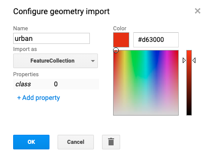
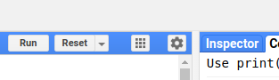

Introducción Google Earth Engine
Taller de Monitoreo Ambiental y Simulación de Inundaciones
Centro de Inteligencia Territorial - UAI
02 de Agosto de 2019
Contenidos
Contenidos
- Definición de Conceptos
- ¿Qué es Google Earth Engine?
- Interface GEE
- Primeros Pasos con GEE
- Acceso a Productos Satelitales: DEM
- Acceso a Productos Satelitales: LANDSAT 8
- Índices Normalizados: NDVI
- Índices Normalizados: NDWI
- Calculos sobre objetos Espaciales
- Clasificación Supervisada
- Exportar Resultados y Aplicaciones webs
Definición de Conceptos
Teledetección
Es una disciplina científica que integra un amplio conjunto de conocimientos y tecnologías para la observación, el análisis y la interpretación de fenómenos espaciales en distintas escalas.
El principio básico se basa en que todos los cuerpos emiten radiación electromagnética, el tipo y la cantidad depende principalmente de la temperatura del cuerpo.
El principal emisor de radiación es el Sol, cuyo reflejo en la superficie y atmósfera terrestre nos permite ver y analizar los objetos a nuestro alrededor.
Especto Electomagnético
Es un conjunto de frecuencias o longitudes de onda en los que se organiza la radiación electromagnética. Abarca las radiaciones entre los rayos gamma y las ondas de radio.
Satélites:
Un satélite es una plataforma que describe una trayectoria definida alrededor de la Tierra denominada orbita. Existen dos tipos de satélites: geoestacionarios y heliosíncronos.
- Geostacionarios: Sobre la línea ecuatorial, a 36.000 km de la Tierra. Comunicaciones y meteorología.
- Heliosíncronos: Orbitas circulares y polares. Captan imágenes con regularidad sobre un mismo punto o escena.
Sensores
Un sensor es un instrumento a bordo de una plataforma capaz de adquirir remotamente información de diferentes regiones del espectro. Cada una de estas regiones se denomina canal o banda espectral. Existen dos tipos de sensores: activos y pasivos.
- Sensores activos: generan su propia radiación y la reciben reflejada (Radar y LiDAR).
- Sensores pasivos: reciben la radiación emitida o reflejada por la Tierra.
¿Qué es Google Earth Engine?
¿Qué es Google Earth Engine (GEE)?
Plataforma de procesamiento geoespacial basado en la nube, de escala global orientada al data análisis ambiental.
Componentes Principales
- Datasets: A petabyte-scale archive of publicly available remotely sensed imagery and other data. Catalogo
- Compute power: Google’s computational infrastructure optimized for parallel processing of geospatial data.
- APIs: APIs for JavaScript and Python for making requests to the Earth Engine servers.
- Code Editor: An online Integrated Development Environment (IDE) for rapid prototyping and visualization of complex spatial analyses using the Javascript API. Explore the Code Editor docs.
Interface GEE


Enlaces de Interés (Oficial):
Primeros Pasos con GEE
Definición de variables
Map and Reduce
/*
ee.List crea objeto de fecha.
se crea una lista para facilitar el mapeo
Mas info sobre funciones ee en la pestaña Docs
*/
var dates = ee.List(["2012-08-14", "2013-08-25", "2014-09-01", "2015-08-23"])
// A function to convert a date to day of year (obtener el día reativo al año)
function DayOfYear(date) {
return ee.Date(date).getRelative('day', 'year')
}
// reducir desde del promedio
print(dates) // Lista de fechas
print(dates.map(DayOfYear)) //Lista de números día año
print(dates.map(DayOfYear).reduce(ee.Reducer.mean())) Acceso a Productos Satelitales: DEM
SRTM Digital Elevation Data 30m
var image = ee.Image("USGS/SRTMGL1_003")
print(image)
Map.addLayer(image,{min:0, max:2000, palette:["blue", "green", "yellow"]})
var elevation = image.select('elevation');
var slope = ee.Terrain.slope(elevation);
Map.setCenter(-70.6728, -33.4463, 10);
Map.addLayer(slope, {min: 0, max: 100,
palette:["#5A606C", "#DEDFE1"]},
'slope');Acceso a Productos Satelitales: LANDSAT 8

var collection = ee.ImageCollection("LANDSAT/LC08/C01/T1_TOA")
.filterDate('2019-01-01', '2019-06-01')
Map.addLayer(collection,{min:0, max:0.3,
bands:["B4", "B3", "B2"]})
Map.setCenter(-70.6728, -33.4463, 10);
var composite = collection.median()
Map.addLayer(composite,{min:0, max:0.3,
bands:["B4", "B3", "B2"]}) 
Índices Normalizados: NDVI
var collection = ee.ImageCollection("LANDSAT/LC08/C01/T1_TOA")
.filterDate('2019-01-01', '2019-03-01')
Map.setCenter(-70.6728, -33.4463, 10);
var composite = collection.median()
// ndvi = (nir - red) / (nir + red)
var nir = composite.select("B5")
var red = composite.select("B4")
print(nir + red) // Error
// + es sumar dos objetos en proxis (instrucciones) no imagenes en el servidor// ndvi = (nir - red) / (nir + red)
var ndvi = composite.expression("(nir - red) / (nir + red)",{
nir: composite.select("B5"), // nir y red variables asignada por diccionario
red: composite.select("B4")
})
Map.addLayer(ndvi,{min:0, max:1,
palette:["yellow", "green", "darkgreen"]} ) 
// NDVI Mediante Función (mejora performance)
function addNDVI(image){
var ndvi = image.expression("(nir - red) / (nir + red)",{
nir: image.select("B5"),
red: image.select("B4")
})
return ndvi
}
var ndvi = addNDVI(composite)
Map.addLayer(ndvi,{min:0, max:1, palette:["yellow", "green", "darkgreen"]} )
// Mapeo de la función en la collection
var ndviCollection = collection.map(addNDVI)
Map.addLayer(ndviCollection,{min:0, max:1,
palette:["yellow", "green", "darkgreen"]} ) 
NDVI de año 2018
var result = ee.ImageCollection("LANDSAT/LC08/C01/T1_TOA")
.filterDate('2018-01-01', '2018-12-31')
.map(function(image){
return image.expression("(nir - red) / (nir + red)",{
nir: image.select("B5"),
red: image.select("B4")
})
})
.max()
Map.setCenter(-70.6728, -33.4463, 10);
Map.addLayer(result,{palette:["yellow", "green", "darkgreen"]} ) Índices Normalizados: NDWI
var collection = ee.ImageCollection("LANDSAT/LC08/C01/T1_TOA")
.filterDate('2019-01-01', '2019-03-01')
var composite = collection.median()
// NDWI = (green - nir) / (green + nir) // Método McFeeters, 1996
var ndwi = composite.expression("(green - nir) / (green + nir)",{
green: composite.select("B3"),
nir: composite.select("B5")
})
Map.setCenter(-72.4975, -41.1051, 10);
Map.addLayer(ndwi,{palette:["#25b418", "blue", "black"]} ) Función NDWI
var collection = ee.ImageCollection("LANDSAT/LC08/C01/T1_TOA")
.filterDate('2019-01-01', '2019-03-01')
// NDWI = (green - nir) / (green + nir) // Método McFeeters, 1996
function addNDWI(image){
var ndwi = image.expression("(green - nir) / (green + nir)",{
green: image.select("B3"),
nir: image.select("B5")
})
return ndwi
}
var ndwiCollection = collection.map(addNDWI)
Map.setCenter(-72.4975, -41.1051, 10);
Map.addLayer(ndwiCollection.max(),{
palette:["#25b418", "blue", "black"]} ) Cloud Masking
Cloud Masking mediante función
// Function para enmascarar nubes utilizando la Banda Quiality Assurance Landsat 8.
var maskL8 = function(image) {
var qa = image.select('BQA');
var mask = qa.bitwiseAnd(1 << 4).eq(0);
return image.updateMask(mask);
}
var composite = ee.ImageCollection("LANDSAT/LC08/C01/T1_TOA")
.filterDate('2019-01-01', '2019-06-30')
.map(maskL8)
.median();
Map.addLayer(composite, {bands: ['B4', 'B3', 'B2'], max: 0.3});
Map.setCenter(-73.0683, -39.8057, 10); //ValdiviaCálculos sobre objetos Espaciales
Buffer sobre NDVI
var collection = ee.ImageCollection("LANDSAT/LC08/C01/T1_TOA")
.filterDate('2019-01-01', '2019-03-01')
function addNDVI(image){
var ndvi = image.expression("(nir - red) / (nir + red)",{
nir: image.select("B5"),
red: image.select("B4")
}).rename("ndvi")
return ndvi
}
var ndviCollection = collection.map(addNDVI)
var maxNDVI = ndviCollection.max()
Map.setCenter(-70.6728, -33.4463, 10);
Map.addLayer(maxNDVI,{palette:["yellow", "green", "darkgreen"]} )
// Crear un punto y un buffer sobre el
var punto_stgo = ee.Geometry.Point([-70.6673068359375, -33.46577773512672]);
var roi = punto_stgo.buffer(20000)
)Crear Objeto de Vegetación Alta con valor NDVI sobre 0.6
// Vegetación Alta > 0.6
var thereshold = maxNDVI.gt(0.6) //imagen Binaria (0 y 1)
Map.addLayer(thereshold)
Map.addLayer(roi
var area = thereshold.multiply(ee.Image.pixelArea())
.reduceRegion({
reducer:ee.Reducer.sum(),
geometry:roi,
scale:30, //resolución imagen siempre es en metros
//maxPixels: xxxxxx+1//1e12, en caso de mensaje de advertencia
crs: "EPSG:4326"
})
print(area)
//B5: 58922585.27239415
print(ee.Number(area.get('ndvi')).divide(1000000))
//58.92258527239415Clasificación Supervisada
Función para Cloud Masking con QA Band
function maskL8sr(image) {
// Bits 3 and 5 are cloud shadow and cloud, respectively.
var cloudShadowBitMask = 1 << 3;
var cloudsBitMask = 1 << 5;
//Get the pixel QA band.
var qa = image.select('pixel_qa');
// Both flags should be set to zero, indicating clear conditions.
var mask = qa.bitwiseAnd(cloudShadowBitMask).eq(0)
.and(qa.bitwiseAnd(cloudsBitMask).eq(0));
// Return the masked image, scaled to reflectance, without the QA bands.
return image.updateMask(mask).divide(10000) // rescale
.select("B[0-9]*") // NO CONSIDERAR BANDA QUE COMIENCE QA
.copyProperties(image, ["system:time_start"]);
}Definir producto y fecha de estudio
Reduce por variancia (mejora resultados de clasificación)
Se puntos o poligonos por cada clase:


Crear Objeto Train y Validación
var points = urban.merge(nubes).merge(water).merge(plantation).merge(forest).merge(hills)
var training = composite.sampleRegions({
collection: points,
properties: ["class"],
scale: 30,
tileScale:16
}).randomColumn()
var validation = training.filter(ee.Filter.lt('random', 0.1))// bajo a
training = training.filter(ee.Filter.gte('random', 0.1)) // mayor o igual a
print(training.size())
print(training.reduceColumns(ee.Reducer.frequencyHistogram(), ["class"]))Clasificador con Random Forest
var classifier = ee.Classifier.randomForest(20).train(training, "class",
composite.bandNames())
print(classifier.confusionMatrix().accuracy())
var result =composite.classify(classifier)
Map.addLayer(result, {min:0, max:5,
palette:["#B0C4DE", "#F0FFFF", "#00008B", "#98FB98", "#228B22", "#F0E68C"]})
//pal : urbano, nubes, "agua", "plantaciones", "bosques", "cerros")
//colors css3: https://www.w3schools.com/cssref/css_colors.asp
var accuracy = validation.classify(classifier)
.errorMatrix("class", "classification")
.accuracy()
//print(accuracy)Resultados

Exportar Resultados
Export.image.toDrive({
image: maxNDVI,
description: 'maxNDVI_STGO',
region: roi,
scale:30, //resolución imagen
crs: "EPSG:4326"
})
Aplicaciones webs
Crear composición y variables de para visualización
var geometry = ee.Geometry.Point([-70.6728, -33.4463]);
var landsat = ee.ImageCollection("LANDSAT/LC08/C01/T1")
.filterDate('2017-01-01', '2018-01-01')
.filterBounds(geometry)
//descartar pixeles con nubes
var composite = ee.Algorithms.Landsat.simpleComposite({
collection: landsat,
asFloat: true
})
var vis = {
"RGB": {bands: ["B4", "B3", "B2"], min:0, max: 0.3},
"False Color": {bands: ["B5", "B4", "B3"], min:0, max: [0.5, 0.3, 0.3]},
"Thermal": {bands: ["B10"], min: 280, max: 310,
palette: ["blue", "red", "orange", "yellow"]}
}Crear Loop para unir mapas y añadir parámetros de visualización
